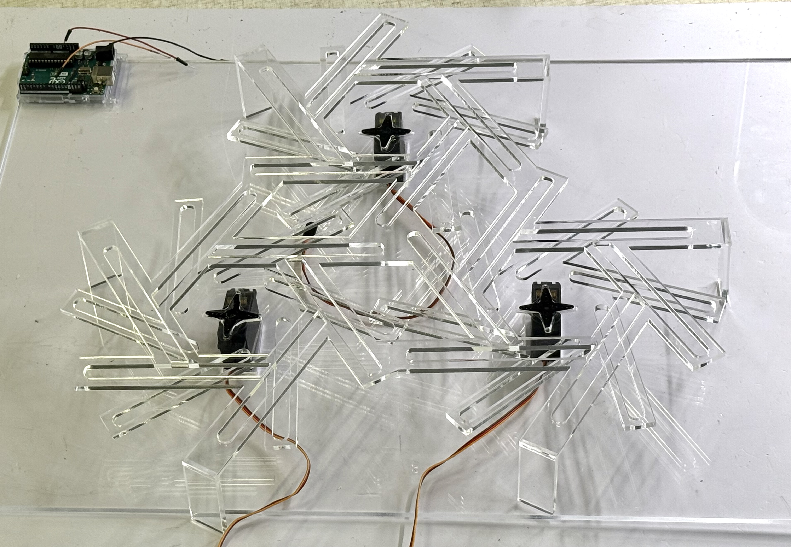
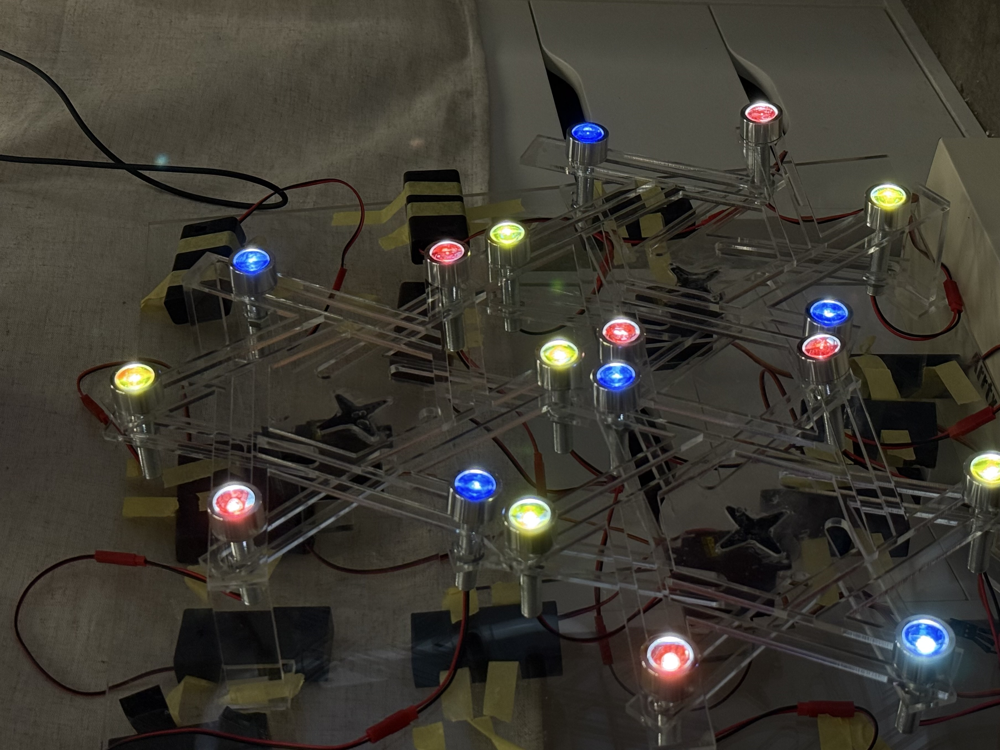

light of life

Light of Life is an installation inspired by sacred geometry, particularly the Seed of Life and the Egg of Life. These geometric systems represent origin, creation, and the fundamental structures of existence. The Seed of Life, composed of seven interlocking circles, is associated with genesis and the beginning of all forms, while the Egg of Life relates more closely to biological growth, resembling cellular formation and early life development. Together, they create a visual language for how complexity emerges from simple, repeating systems.
In this installation, I translate these symbolic geometries into a kinetic light system. The structure follows a hexagonal path derived from the circular logic of sacred geometry and incorporates a mechanical system based on an iris diaphragm. This mechanism allows the light to expand, contract, and move rhythmically across the structure. Rather than presenting geometry as a static form, the installation activates it, turning it into a living system that continuously transforms in space.
The light is composed of yellow, red, and blue, referencing the primary colors that form the foundation of both light and visual perception. These colors function as symbolic origins, suggesting that visual and material complexity can be reduced to a small set of fundamental elements. As the iris diaphragm moves, the colors overlap, blend, and separate along the hexagonal path, producing moments of unity and fragmentation. This shifting interaction reflects early stages of life, when form is still fluid, unstable, and in the process of becoming.
The work ultimately symbolizes the beginning of life and explores one’s original state: a condition before identity becomes fixed or defined. It invites viewers to reflect on a moment of pure potential, where existence is not yet structured but is constantly emerging. By combining sacred geometry, mechanical motion, and light, the installation creates an immersive environment where origin, growth, and transformation are continuously unfolding.
moving images
process
The project began with digital modeling in Rhinoceros 3D and Grasshopper. I used Grasshopper to construct the underlying geometric logic based on the Seed and Egg of Life patterns, generating a system of interlocking circles and translating them into a hexagonal structural framework. Parametric tools allowed me to control proportions, spacing, and repetition, ensuring both geometric precision and adaptability.
After finalizing the digital design, I moved into physical fabrication. The structure was built using acrylic panels, chosen for their translucency and ability to diffuse light. A lighting system using colored LEDs — yellow, red, and blue — was integrated into the structure, along with a track mechanism that guides the movement of light along the hexagonal path. The iris diaphragm mechanism was incorporated to control the opening and closing of light, introducing a dynamic, breathing-like motion to the installation.
Through this process, the project transitions from computational design to physical realization, bridging digital geometry, mechanical systems, and sensory experience.

